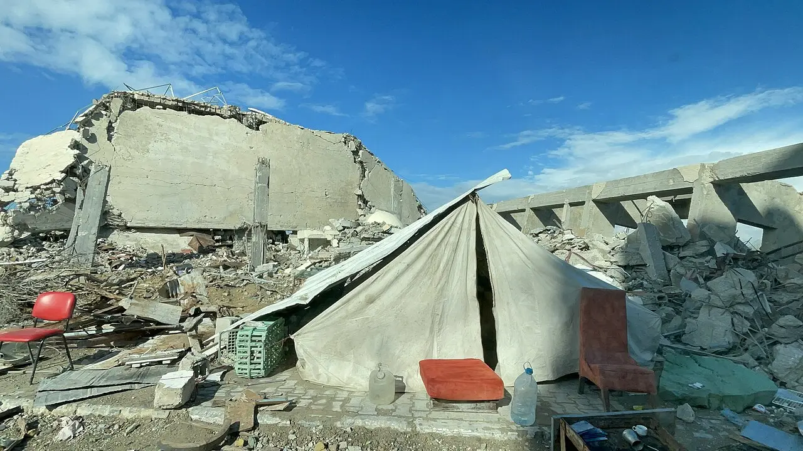
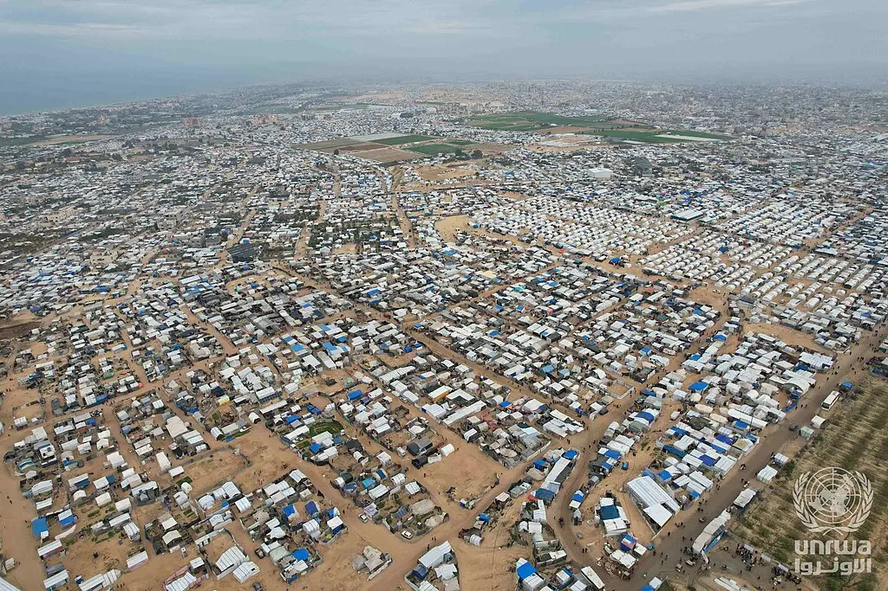
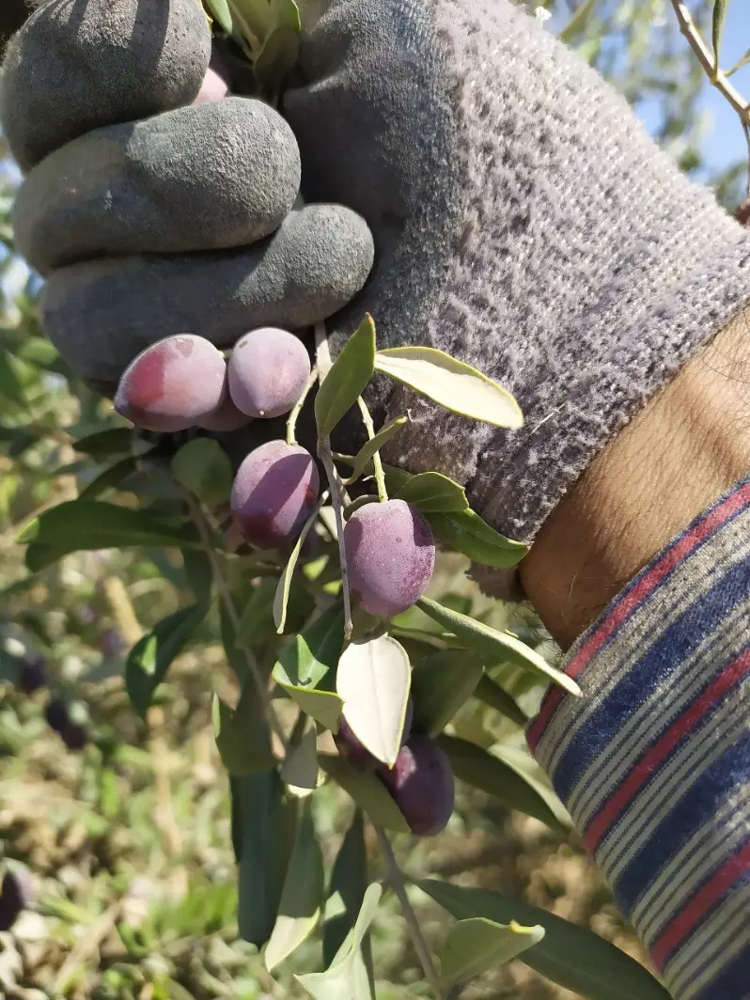
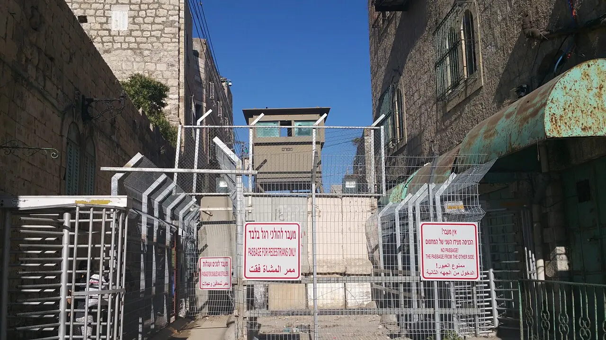
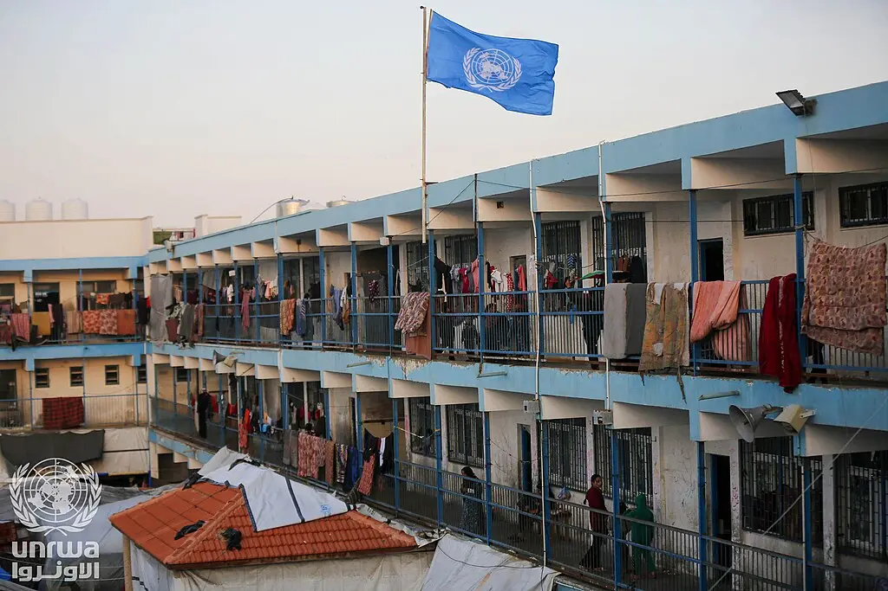
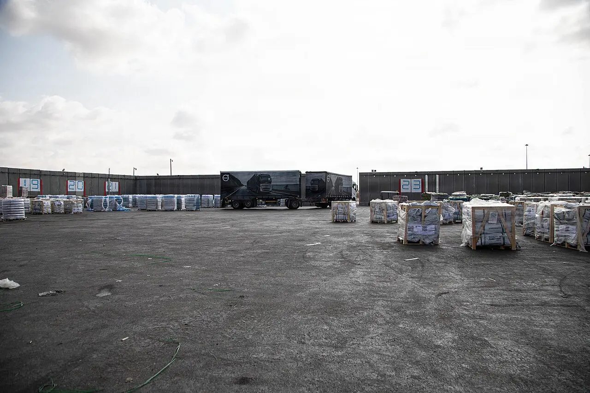

Palestine: Gaza and the West Bank
A year into the October 2025 ceasefire, Gaza's health ministry counts 1,622 killed since the truce; storms flood tent camps, and the UN says winter aid is being delayed.
Latest in this thread
Every update →- November 2026
Strike hits Gaza medical complex; nine killed
Lives lostAt least nine were killed across Gaza, four in a strike at Khan Younis's Nasser Medical Complex, civil defence said, and two brothers in a Sheikh Radwan tent. No Israeli military comment was reported.
Al Jazeera · Edition of Thu 12 NovUN: 'No more delay' on Gaza winter aid
Life & safetyUN relief chief Tom Fletcher said waiting for a new Israeli government is "not an acceptable excuse" to delay winter aid; UNICEF says rain hit 106,000 people. Tents need Israeli permits, the UN says.
UN News · Al Jazeera · Edition of Thu 12 NovFather and son among eight killed in Gaza
Lives lostIsraeli strikes and gunfire killed at least eight Palestinians, including a 13-year-old boy and his father, local health sources said. No Israeli military comment was reported.
Al Jazeera · Edition of Wed 11 Nov
Despite an October 2025 ceasefire, Israeli strikes and fire still kill Palestinians in Gaza almost daily, health officials say.
Al JazeeraAbout 950,000 displaced Gazans live in tents at flood risk; West Bank settler attacks hit a record in October.
UN News · Al JazeeraIsrael says reconstruction materials stay out until Hamas disarms; aid groups say shelter supplies are blocked as winter starts.
Jerusalem Post · Al Jazeera File photo · 2025
File photo · 2025i

The background
 File photo · 2025
File photo · 2025i

Two years of war killed about 1,200 people in Israel and, by Gaza's count, over 74,000 in Gaza.
More detail and sources
The war began when Hamas-led militants attacked southern Israel on 7 October 2023, killing some 1,200 people, mostly civilians, and taking 251 hostages. In Israel's offensive that followed, Gaza's health ministry says 74,640 Palestinians have been killed. The ministry, part of the Hamas-run government, does not separate civilians from combatants; the UN and many independent experts consider its figures the most reliable estimate. AP via PBS · APA (Gaza health ministry)

File photo · 2025i

The ceasefire freed the hostages, but deaths in Gaza continue.
More detail and sources
A ceasefire began in October 2025. On 13 October 2025 all 20 living hostages were freed and Israel released more than 1,900 Palestinian prisoners. Killings in Gaza have continued: by 2 November 2026 the health ministry counted 1,593 people killed since the truce. Israel says many of those killed were Hamas fighters, often without giving evidence, Al Jazeera reports. AP via PBS · Al Jazeera

File photo · 2025i

Nearly a million people face winter in tents.
More detail and sources
Most of Gaza's people are displaced. The UN says about 950,000 live in sites at medium to high risk of flooding, entering a fourth winter in tents. The first storm of the season, on 7 November, flooded about 70,000 tents, Gaza's media office said. Aid groups blame Israeli limits on shelter materials; Israel rejects accusations that it restricts aid. UN News · Al Jazeera · Arab News

File photo · 2020i

Settler attacks reached a record during the olive harvest.
More detail and sources
In the occupied West Bank, OCHA documented 397 settler attacks causing casualties or damage in the first 26 days of October, the highest monthly figure since it began counting in 2006. Many hit the olive harvest. After masked settlers attacked European diplomats in Taybeh, police arrested 10 suspects; a court later released nine of them to house arrest. Al Jazeera · AP via PBS · Al Jazeera

File photo · 2015i

Hebron's operation displaced thousands of Palestinians.
More detail and sources
After two Israeli soldiers were killed near Hebron on 23 October, Israel locked down the West Bank and began an operation in the city. About 5,000 people were displaced, Al Jazeera reported; Israel's defence minister said residents could not return until operations ended. The UN rights chief called it collective punishment and warned of "serious concerns of ethnic cleansing". AP via KATV · Al Jazeera · UN News
Timeline
Newest first. Every update links to its sources.
- Latest
Over 11 and 12 November Israeli strikes and gunfire killed at least nine Palestinians across Gaza, including at least four in an air strike at the Nasser Medical Complex in Khan Younis early on 12 November, Gaza Civil Defence said, and two brothers in a tent in Sheikh Radwan; no Israeli military comment was reported. Al Jazeera puts the toll since the truce at 1,622. On 11 November UN relief chief Tom Fletcher said governments delaying winter aid until a new Israeli government forms was "not an acceptable excuse" and urged: "Open all the crossings, not just one." Al Jazeera · UN News
Show 8 earlier updates ↓
On 10 November Israeli strikes and gunfire killed at least eight Palestinians in Gaza City and Khan Younis, including a 13-year-old boy and his father in a tent in Zeitoun, local health sources said; no Israeli military comment was reported. The health ministry counts more than 1,600 killed since the truce. In the West Bank, the owner of an industrial zone in Beita said more than 150 settlers stoned workers and burned machinery; the Israeli army said the same day it had cleared four outposts it called a source of repeated violence and detained three Israeli civilians. Al Jazeera · Middle East Eye · Times of Israel
A day after the Deir el-Balah landslide, two people were still missing, Al Jazeera reported. Save the Children said more than half a million children live in "critical or catastrophic" shelter conditions and that Israel has repeatedly blocked caravans the ceasefire promised; no Israeli response was reported. Al Jazeera
Heavy rain collapsed a sandbank onto tents in Deir el-Balah, killing five people, four of them children, local health authorities said. Israeli security officials said 91,000 tents and tarps and 9,000 truckloads of clothes and blankets had entered for winter, and that reconstruction equipment and mobile homes would stay out while Hamas refuses to disarm. Al Jazeera (Anadolu) · Jerusalem Post
Israel released Palestinian journalist Abed Abou Shhadeh after five days in detention without charge on suspicion of "contact with a foreign agent". His lawyers at Adalah said police had no evidence; no official comment was reported. Al Jazeera
The first winter storm flooded about 70,000 tents across Gaza, the Gaza media office said, with walls collapsing and people injured. The civil defence agency received about 1,500 distress calls in 10 hours. Aid groups blamed Israeli restrictions on shelter materials. Al Jazeera
Gaza's health ministry put the toll since the ceasefire at 1,593. Hospitals said strikes on 1 November killed eight people, including five police officers in al-Mawasi; Israel's military said it struck military operatives. Al Jazeera · BBC
UN High Commissioner for Human Rights Volker Türk said more than 3,000 Palestinians had been forced from their homes in Hebron, called it collective punishment and warned of "serious concerns of ethnic cleansing". No Israeli response to his statement was reported. UN News
Two Israeli soldiers and two Palestinian gunmen were killed in an attack near Hebron. Israel ordered a full lockdown of the West Bank; Hebron's mayor said about 2,200 people were forced from their homes, while Israel's defence minister put it at about 2,000. AP via KATV
In pictures

File photo · 2025i


File photo · 2025i
.jpg){kind=link}
- Israel's military says its strikes in Gaza target Hamas fighters or "terrorists"; in many cases it gave no details or evidence.
- Israel rejects accusations that it restricts aid; security officials say 91,000 tents and tarps and 9,000 truckloads of winter supplies have entered.
- Reconstruction equipment and mobile homes will stay out while Hamas refuses to disarm, Israeli security officials say.
Show 3 more
- In Hebron the military says it is dismantling "terrorist infrastructure"; the defence minister said residents cannot return until operations end.
- The military called the settler attack on diplomats in Taybeh "severe"; police arrested 10 suspects.
- No Israeli response to the UN rights chief's ethnic-cleansing warning was reported.
In the daily edition: Thu 12 Nov · Wed 11 Nov · Tue 10 Nov · Mon 09 Nov · Sun 08 Nov · Sat 07 Nov · Fri 06 Nov · Thu 05 Nov · Wed 04 Nov · Tue 03 Nov · Mon 02 Nov · Sun 01 Nov · Sat 31 Oct · Fri 30 Oct · Thu 29 Oct · Wed 28 Oct · Tue 27 Oct · Mon 26 Oct · Sun 25 Oct · Sat 24 Oct · Fri 23 Oct · Wed 21 Oct · Tue 20 Oct · Mon 19 Oct · Sun 18 Oct · Sat 17 Oct